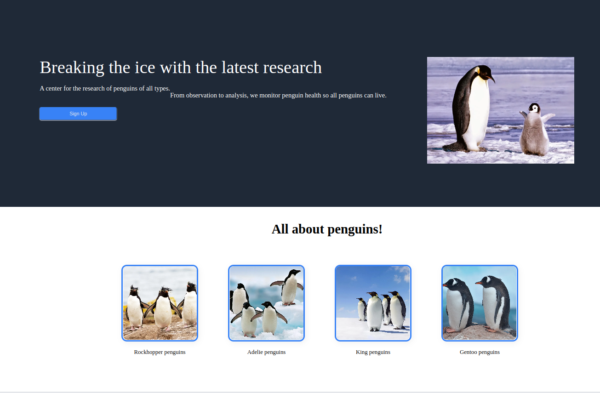
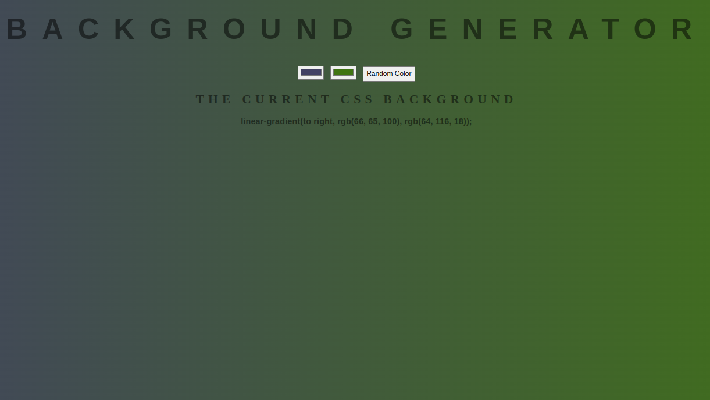

🖥️Live Preview
A website describing penguin research.
Understanding how flexbox interacts with other components, and how spacing properties such as padding, margin and gap all interact with each other.
Also learned how to link a sign up button to a live email list service.
Experiment with different combinations of values for various properties of flexbox and general CSS (justify-content, align-items, gap, margins, padding, etc.). Also referred to documentation for more details about flexbox and CSS.

🖥️Live Preview
A webpage that picks two random colors for a gradient style on a background.
Understanding how to use DOM methods and events by referring to the documentation. Also learned how to create a linear gradient in CSS.
Use the DOM methods to target specified containers, then create new variables and functions that will change the color of the background. Event listeners are attached to relevant elements.
This Website
A webpage that displays Non
blahblahblah
blahblahblah